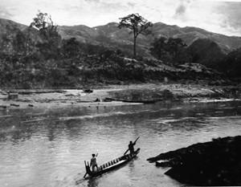
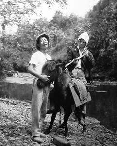

...Quán lá tan hoang, cối nước chỏng chơ. Người Kinh như con ma rừng, đi đến đâu, nơi ấy nhiều cái vốn đang hay đang đẹp lụi tàn dần hoặc được làm cho “hay” hơn “đẹp” hơn rồi... chết. Cái hồn rừng hồn núi mộc mạc thật thà teo tóp cả. Chà, người Kinh, cái giống người kinh...hãi của núi của rừng...
☆
1960.
Khu tự trị Thái Mèo gồm mười tám châu. Năm 1963 đổi thành khu tự trị Tây Bắc, gồm ba tỉnh Lai Châu, Sơn La và Nghĩa Lộ. Anh em cán bộ văn hóa ở Thuận Châu cũng chia ra đi làm việc tại ba tỉnh.
Ông Lương Quy Nhân được bổ nhiệm làm Trưởng Ty Văn hóa Lai Châu. Ông đem theo một số anh em, trong đó có Thủy và Ðặng Trần Sơn. Những người được điều đi Lai Châu được coi là những người có tinh thần xung phong, chịu khó chịu khổ.
Danh sách có đến gần hai chục người nhưng người về xuôi, người nghỉ phép, người đi công tác... chỉ còn hắn và Ðặng Trần Sơn theo ông Lương Quy Nhân đi tuốt lên đó.
Vậy là hai anh em được coi là những người đầu tiên của Ty Văn hóa Lai Châu thuở sơ khai.
Ban đầu “trụ sở” Ty đóng tại dinh cơ của Ðèo Văn Long, một thời là vua xứ Thái, nơi ngã ba sông, sông Nậm Na và sông Ðà gặp nhau rồi đổ về xuôi. Bên kia là Mường Lay. Cả một dinh cơ của một ông vua, tòa ngang dãy dọc bỏ hoang chẳng có ai ở, bây giờ chỉ còn là nơi buộc ngựa để qua sông, những người từ Mường Tè, Từ Phong Thổ về qua đây...
Thiên nhiên quá hùng vĩ. Sức mạnh của tạo hóa thật vô cùng vô tận. Dòng sông chảy xối xả như thác, cứ ầm ầm ào ào suốt ngày suốt đêm, từ đời này sang đời khác, từ thế kỷ này qua thế kỷ khác, hàng ngàn vạn năm từ khi khai thiên lập địa. Những hòn đá nhỏ như viên bi cho đến những tảng đá to bằng nửa cái nhà, tất cả đều tròn vo, nhẵn thín. Khi mặt trời mọc, từ trên đỉnh núi, nhìn xa xa, núi non trùng trùng điệp điệp nhấp nhô như ngàn vạn con lạc đà nằm phủ phục...
Căn phòng có một cái cửa sổ to hình chữ nhật. Non nước mây trời, mưa rừng gió núi, những buổi hoàng hôn rực rỡ, những đêm dài sâu thăm thẳm... những hình ảnh lúc nhanh lúc chậm trôi qua khung cửa tựa như những cảnh phim trên màn hình, ngày này sang tháng khác, miệt mài không một giây ngưng nghỉ.

...những hình ảnh lúc nhanh lúc chậm trôi qua khung cửa tựa như những cảnh phim trên màn hình...
(từ ngôi nhà của Ðèo Văn Long nhìn ra)
...Những con người từng qua lại nơi đây, những người phu thồ ngựa, những cô gái múa xòe năm xưa trong thời huy hoàng của vua xứ Thái... những người ấy hồn ở đâu bây giờ?
Trên tường, treo hai bên khung cửa sổ, một bên cây thước, một bên chiếc gương. Vô tình thôi, có chủ ý gì đâu nhưng dần dần trí tưởng tượng tuổi trẻ mộng mơ bỗng một hôm nhận ra rằng khung cửa sổ kia chính là màn hình, cái thước, chiếc gương là hình ảnh của sự ngay thẳng trong sáng.
Và ý tưởng đó cứ rõ dần rõ dần cùng với sự nếm trải những gian nan cơ cực chìm nổi trên đường đời, kể cả khi mái đầu đã bạc, cặp mắt đã mờ...
Có điềm báo gì ngay khi tuổi đang xuân trong ngôi nhà hoang Tây Bắc năm xưa? Một “màn hình” chữ nhật, những “cuốn phim” sống động, cái thước và chiếc gương...
☆
Hắn và Ðặng Trần Sơn ngày ngày vào rừng kiếm củi, xuống suối lấy nước thổi cơm rồi cặm cụi làm việc. Ðêm đến sợ cọp beo rình mò thì dộng ống bương xuống sàn theo nhịp điệu và hát inh ỏi. Có thể nói đây là một đoạn đời đẹp, hình thành tính cách của hai thằng mới bước vào đời.
“Ðường lên Tây Bắc quanh co, nếp nhà sàn đây đó...”
Ðúng như câu hát quen thuộc một thời. Những con đường mòn vòng vèo, dài như vô tận, chập chùng lên xuống, rẽ ngang rẽ dọc, thỉnh thoảng bên suối lại nghe tiếng cối nước giã gạo thong thả, thình... thịch, cứ thế ngày đêm thình... thịch, thình... thịch... chậm rãi như tiếng thời gian. Nó cặm cụi “làm việc” một mình, chẳng có một bóng người. Nhà chủ cối gạo có thể ở gần đâu đây, cũng có thể cách đó hàng giờ đi bộ. Có người đi qua còn ngồi xuống đảo gạo hộ hay thấy gạo giã đủ trắng rồi còn giúp xúc ra, đổ gạo chưa giã vào - gạo để trong cái gùi ngay bên cối.

...đây là một đoạn đời đẹp, hình thành tính cách của hai thằng mới bước vào đời.
(Tháng 11-1963, hai đứa trên đường từ Ðiện Biên đi Mường Lói, bắt được con ngựa lạc, “nhờ” nó chở đồ)
Dọc đường đi thỉnh thoảng lại gặp một túp lều không người, bên trong treo vài nải chuối, mấy củ khoai, củ sắn, măng rừng, vài bắp ngô, mớ trứng gà, cả gà nữa. Ai cần cái gì thì lấy cái đó và tự bỏ tiền vào cái giỏ con bên cạnh.
Chẳng hiểu người dân tộc vốn chân chất hồn nhiên gọi đó là cái gì, mà chắc họ cũng chẳng cầu kỳ đặt tên cho nó. Về sau người Kinh lên đặt cho nó cái tên chữ của cách mạng nghe hay lắm: “Quán tự giác”. Ðược cái tên hay thì nó cũng thoi thóp và “tự giác”... chết, vì hàng để trong quán biến mất mà giỏ đựng tiền thì rỗng không. Những ai đã biết, đã từng thấy những cái quán dễ thương đó bây giờ nhớ lại cái tên “quán tự giác” sẽ có chút bâng khuâng, chút xót xa...
Quán lá tan hoang, cối nước chỏng chơ. Người Kinh như con ma rừng, đi đến đâu, nơi ấy nhiều cái vốn đang hay đang đẹp lụi tàn dần hoặc được làm cho “hay” hơn “đẹp” hơn rồi... chết. Cái hồn rừng hồn núi mộc mạc thật thà teo tóp cả. Chà, người Kinh, cái giống người kinh...hãi của núi của rừng...
☆
Hôm đó 26-11-1960, là ngày hắn tròn 20 tuổi, hơn bốn giờ sáng bắt đầu leo lên dốc Mường Mô, trưa mới lên đến đỉnh, nhìn xa xa tít tắp, nơi có ngọn khói lam bốc lên. Ðó là cơ quan huyện Mường Tè, vậy mà đi đến sẩm tối mới tới nơi. Huyện Mường Tè là huyện xa nhất của Lai Châu và của cả Tây Bắc, gà gáy ba nước cùng nghe. Nơi đó không có quốc lộ, chỉ có những con đường mòn qua nhiều đèo dốc suối khe, là quê hương của những tộc người hoang sơ nhất...
Hắn làm công tác dân tộc học, công việc là tìm hiểu, viết tài liệu về những bầy người du cư ở biên giới, với những địa danh nghe lạ tai như: Ca lăng, Té Xứ, Pa Ủ, Pa Vè Xủ, Mali Pho, Mali Chải... với những người Hà Nhì, còn gọi là người U Ní, người Khù Xung (cùng khổ), người Toong Lương (lá vàng)... Trong những chuyến đi, hắn sống với những bầy người “nguyên thủy” chỉ có mảnh vỏ móc che thân dưới, còn thì ở trần. Họ còn lưu giữ những vật dụng để lấy lửa bằng đá, chặt nứa làm lều, lấy lá chuối lợp lên để che mưa che nắng, đào sâu một khoảng đất vừa đủ cho tất cả bầu đoàn trú ngụ. Có lẽ hình thái sống trong hang động vẫn đeo bám họ. Khi xung quanh cạn nguồn ăn, cây cỏ củ quả, muông thú không còn, cũng là lúc lá lợp đã úa vàng thì họ lại kéo nhau đi.
Năm 1960 khi được bộ đội biên phòng tìm ra, những bầy người du cư còn sống hoang sơ lắm.
Nước chỉ dùng để uống, họ ít biết đến tắm rửa. Trong cái lỗ ở quây quần với nhau, họ lấy vài thanh nứa làm cái sạp cho hắn nằm, còn họ nằm đất. Buổi tối họ đốt đống lửa, hú hét một lát rồi lăn ra ngủ xung quanh. Ðêm thức giấc, đống lửa sưởi đã gần tàn, hắn thấy họ quấn lấy nhau thành cái vòng tròn như sợi dây thừng, chẳng biết đâu là đầu, đâu là đuôi. Họ vẫn sống quần hôn, kéo nhau đi cả bầy đàn, sinh con đẻ cái mà chẳng biết đứa nào của ai.
Hắn đã tìm hiểu đời sống, sinh hoạt, tập quán và cội nguồn một số dân tộc khác nữa và cứ cần mẫn ghi chép đầy đủ làm thành tư liệu dân tộc học để gửi về Hà Nội...